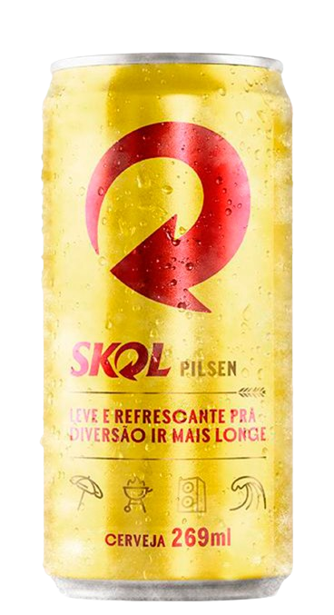

Cerveja Skol Pilsen Lata.
A clássica redonda que anima qualquer momento. Seu nome vem da palavra escandinava skål, que significa "à vossa saúde/à nossa saúde"; expressão comum que antecede brindes.
É hoje a maior do segmento no mercado brasileiro e a quinta maior do segmento no mundo. Cerveja do tipo Pilsen, Skol é uma cerveja clara, com aroma refinado e sabor leve e suave.Skol Pilsen é uma típica cerveja clara, com aroma refinado e sabor leve e suave. Seu teor de amargor é menos acentuado e seu teor alcoólico é médio.
Graduação Alcoólica 4,7%.
Conteúdo 269ml.
Cerveja Nacional.
Nome |
Cerveja Skol |
Fornecedor |
Carlsberg |
Código |
137 | EAN: 7891149103102 |
Nacionalidade |
Brasil |
Marca |
Skol |
Família |
Lager |
Estilo |
Pilsen |
Embalagem |
Lata |
Litragem |
Até 269ml |
Com ou Sem Álcool |
Com Álcool |